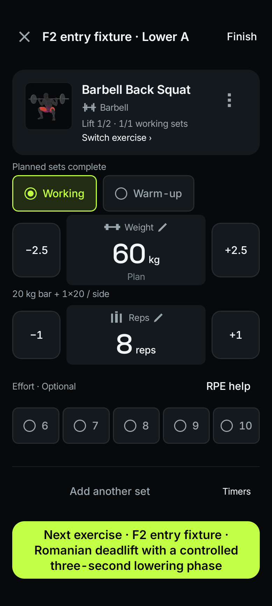
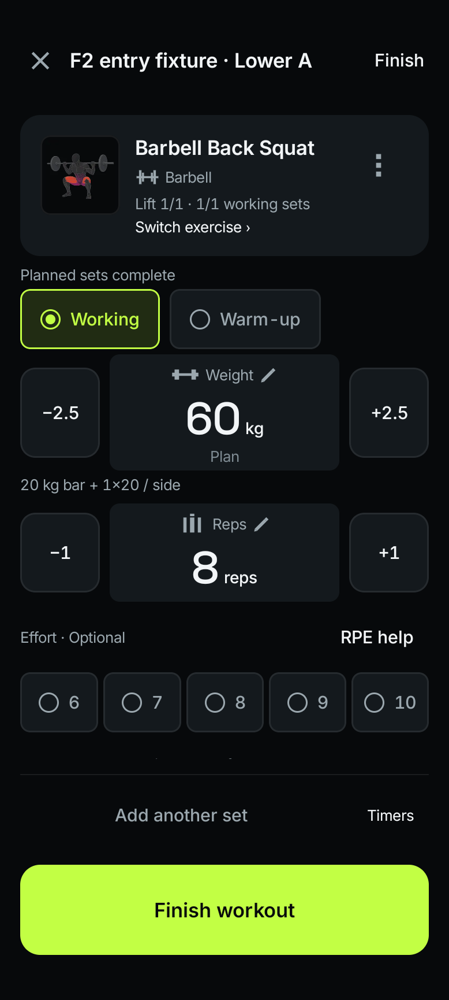
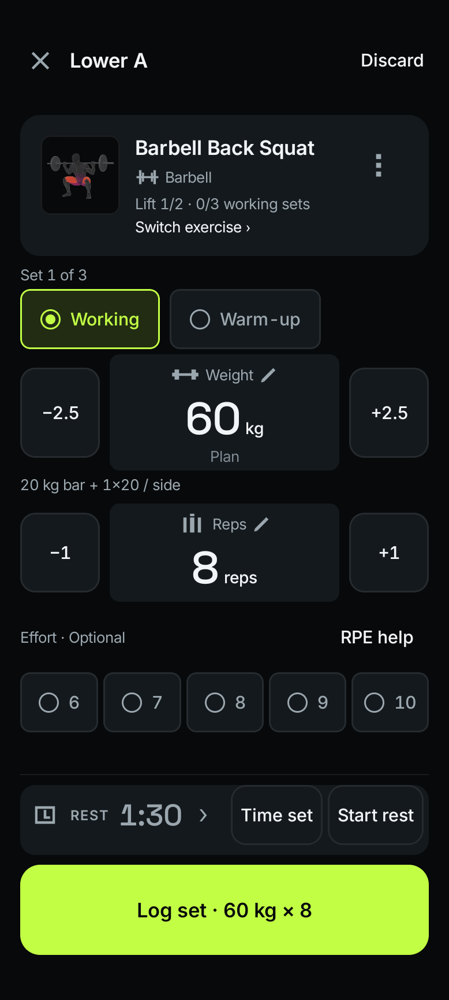
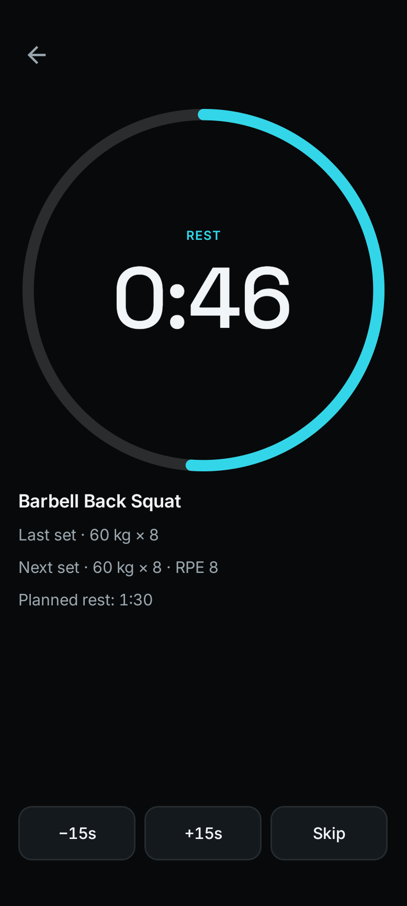
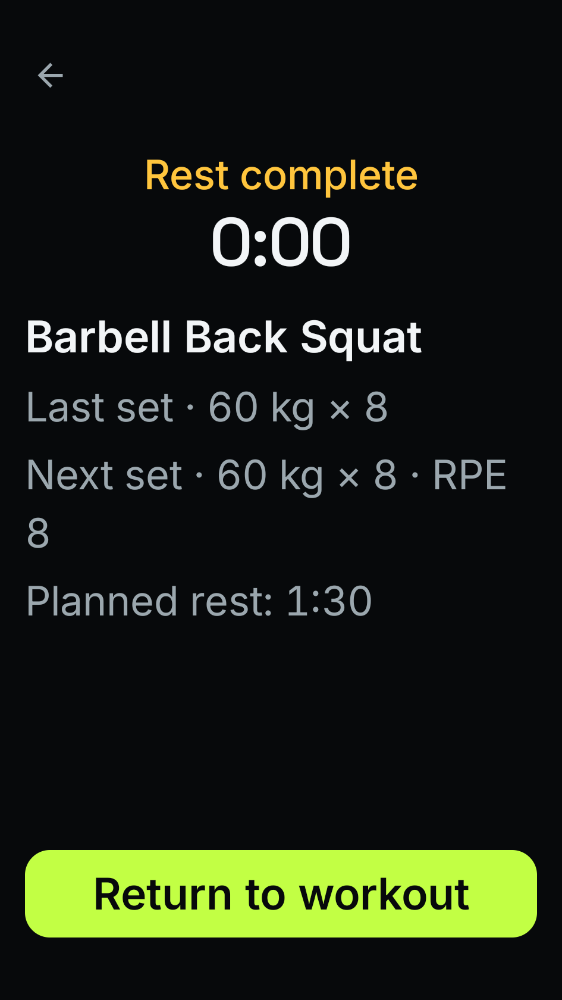
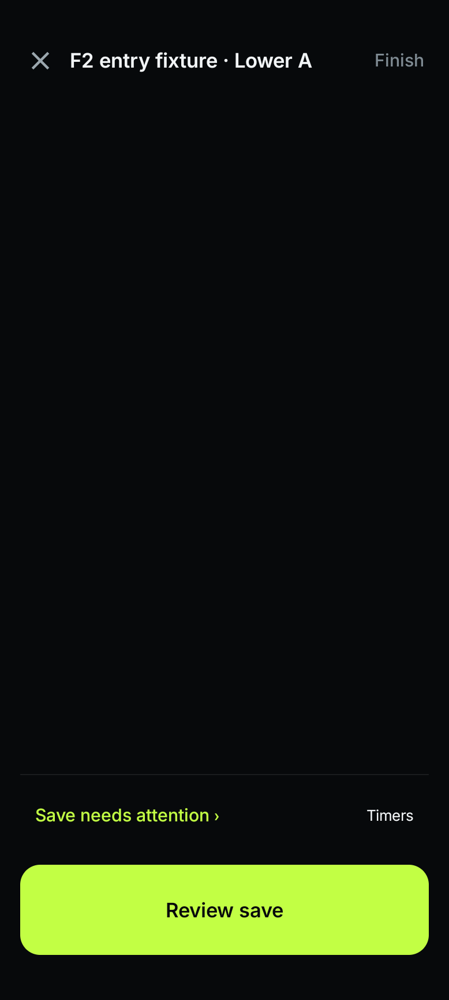
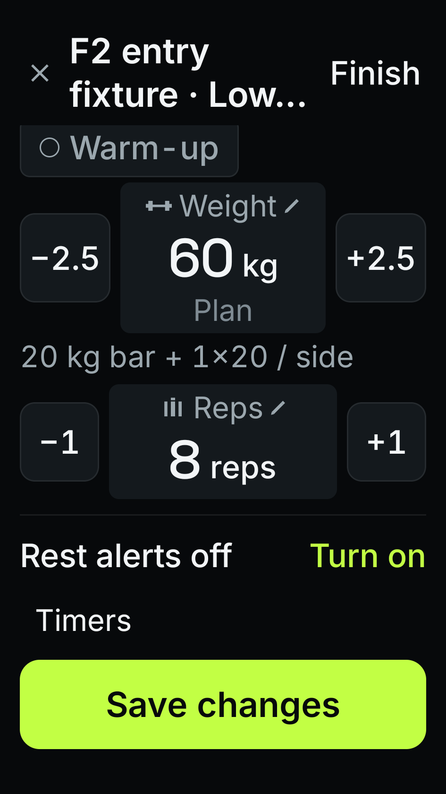
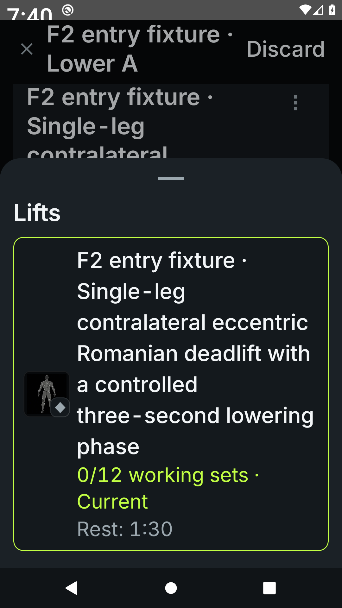
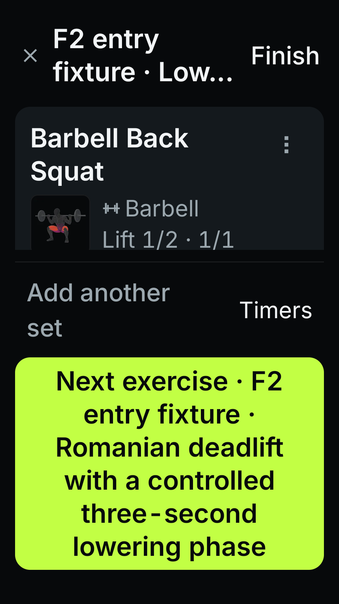
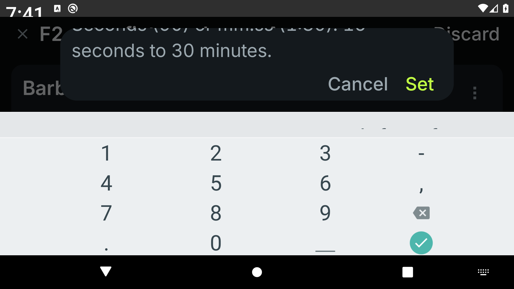

Temper · native redesign · packet 3
One clear next action.
Save the displayed set. Add another when you want one. Move to the next unfinished exercise with a deliberate tap. Finish when the planned workout is complete.
API 29 verification passed: 222 native tests, including fresh image comparisons. The local build, lint and all 2,579 unit tests also passed. API 36 and API 26 each passed 86 workout checks; source reviews are clear. Hosted verification passed, including 222 native tests. PR #351 is merged; integrated checks passed. Debug 79 delivery is being prepared; physical phone acceptance remains pending. These references use synthetic workout data.
Finish the exercise, then choose what follows
The primary action derives from saved working sets. Warm-ups, editing, explicit extra sets and active timing retain their own actions. Earlier skipped exercises remain in the unfinished order.

Actual workout route · completed exercise · next unfinished exercise.

Actual workout route · all planned exercises complete · finishing still asks for confirmation.
Timing belongs beside the work
Rest, Hold and Set time have explicit labels. Starting or stopping timing does not silently save a result. Closing the full rest screen keeps the shared timer running.

Shipping components · fixed clock fixture · distinct timer actions.

Shipping rest presentation · fixed 46-second clock.

360 × 640 dp · font scale 2.0 · completed rest.
Recover the operation that failed
A failed save retains its original exercise and values. Retry checks whether that exact operation already reached storage before attempting it again. A changed or removed original set is explained instead of silently overwritten.

Actual route · restored pending operation · removed exercise.

Actual route · edit draft · font scale 2.0 · notifications unavailable.
Native overlays and constrained layouts
Exercise names wrap. The switcher identifies Current, Complete and Remaining. Switching during set timing requests confirmation. Custom rest entry replaces its parent sheet; Cancel returns to that sheet.

Actual Android window · system font scale 2.0.

360 × 640 dp · long next exercise name · font scale 2.0.
Landscape custom rest entry

Actual landscape window · system font scale 2.0 · single foreground overlay.Verification and phone acceptance
The evidence record distinguishes actual workout routes, immutable component fixtures, native interaction checks and pixel comparisons. Physical TalkBack, upgrade retention, haptics, background timing and measured phone performance remain acceptance work until executed on the owner's device.
Executed checks and limitations · Machine-readable evidence